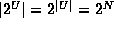
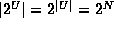
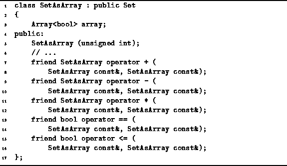

Data Structures and Algorithms
with Object-Oriented Design Patterns in C++
Data Structures and Algorithms
with Object-Oriented Design Patterns in C++
In this section we consider finite sets over a finite universe.
Specifically, the universe we consider is  ,
the set of integers in the range from zero to N-1,
for some fixed and relatively small value of N.
,
the set of integers in the range from zero to N-1,
for some fixed and relatively small value of N.
Let  be the universe.
Every set which we wish to represent is a subset of U.
The set of all subsets of U is called the power set
of U and is written .
Thus, the sets which we wish to represent are the elements of .
The number of elements in the set U, written |U|, is N.
Similarly, .
This observation should be obvious:
For each element of the universal set U there are only two possibilities:
Either it is, or it is not,
a member of the given set.
be the universe.
Every set which we wish to represent is a subset of U.
The set of all subsets of U is called the power set
of U and is written .
Thus, the sets which we wish to represent are the elements of .
The number of elements in the set U, written |U|, is N.
Similarly, .
This observation should be obvious:
For each element of the universal set U there are only two possibilities:
Either it is, or it is not,
a member of the given set.
This suggests a relatively straightforward
representation of the elements of --an array of Boolean values, one for each element of the universal set.
By using array subscripts in U,
we can represent the set implicitly.
I.e., i is a member of the set if the  array element is true.
array element is true.
Program  declares the class SetAsArray.
This class uses an array of length
declares the class SetAsArray.
This class uses an array of length  to represent the elements of where
to represent the elements of where  .
A SetAsArray is a Set.
Therefore, it supports the basic operations of searchable containers
including Insert, IsMember, and Withdraw.
.
A SetAsArray is a Set.
Therefore, it supports the basic operations of searchable containers
including Insert, IsMember, and Withdraw.

Program: SetAsArray Class Definition
In addition, Program overloads the operators
+, *, -, ==, and <=.
The first three operators correspond to
set union, set intersection, and set difference (respectively).
The last two are used to compare two sets and
to determine whether one set is a subset of another.
 Copyright © 1997 by Bruno R. Preiss, P.Eng. All rights reserved.
Copyright © 1997 by Bruno R. Preiss, P.Eng. All rights reserved.